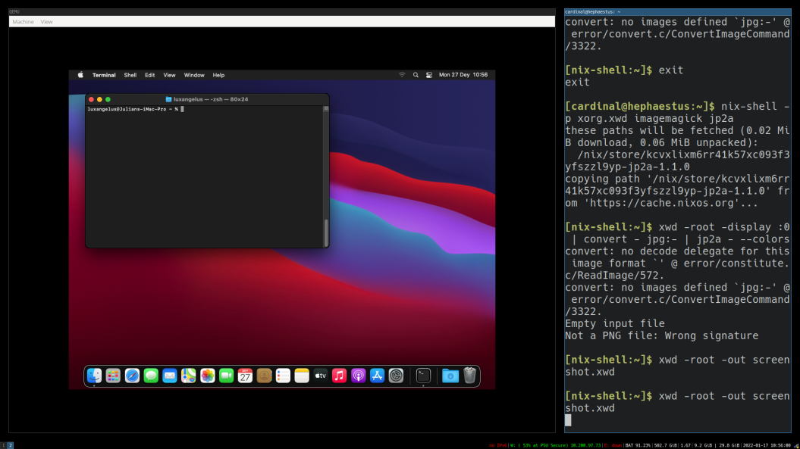

Screenshot of macOS running in a virtual machine.
blured screenshot of macOS virtual machine.
inverted screenshot of macOS virtual machine.
low brightness screenshot of macOS virtual machine.
Highly saturated screenshot of macOS virtual machine.
Sepia scale screenshot of macOS virtual machine.
Screenshot of macOS running in a virtual machine.